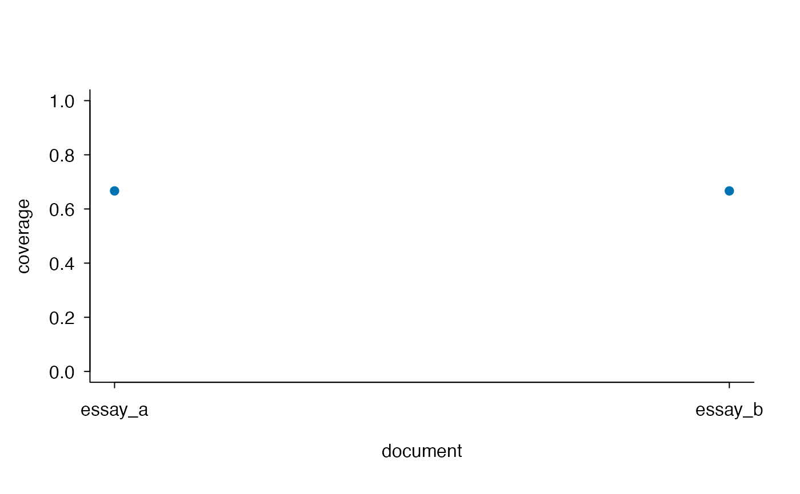

Compute Coverage of Multiple Documents by One Reference Term Set
lexdiv_reference_coverage.RdCompute token- and type-weighted directional coverage for multiple explicit term vectors against one reference term set. Exact matching, denominators, empty-input behavior, and optional term disclosure are explicit.
Usage
lexdiv_reference_coverage(
documents,
reference,
reference_id = "reference",
id_col = "document_id",
terms_col = "terms",
details = "counts",
max_rows = 1e6
)
# S3 method for class 'lexdiv_reference_coverage'
print(x, ...)
# S3 method for class 'lexdiv_reference_coverage'
plot(
x,
weighting = "token",
col = "#0072B2",
pch = 19,
main = NULL,
xlab = "document",
ylab = "coverage",
ylim = c(0, 1),
...,
monochrome = FALSE
)Arguments
- documents
Either a plain named list whose elements are term vectors, or a data frame containing the columns selected by
id_colandterms_col. The selected ID column must contain unique character IDs; the selected terms column must be a list-column with one element per row.- reference
A plain character vector containing one complete reference term per element.
- reference_id
One path-free, non-empty valid-UTF-8 reference identifier. It must differ from every document ID.
- id_col
Name of the document-ID column for data-frame input.
- terms_col
Name of the term list-column for data-frame input.
- details
Either
"counts", which does not retain lexical strings, or"terms", which retains document types, document and reference counts, and exact-match indicators in$terms.- max_rows
One finite positive integer limiting the combined number of rows in all returned data frames. The bound is checked before term-detail allocation.
- x
A
lexdiv_reference_coverageobject.- weighting
Exactly one of
"token"or"type". Plotting never combines the two weighting definitions silently.- col, pch, main, xlab, ylab, ylim
Base-graphics settings.
- monochrome
One
TRUEorFALSEvalue; specify by name. Defaults to color;TRUEoverridescolwith black. No title is added automatically; place figure titles and notes outside the image.- ...
Additional arguments passed to the data-frame print method or
graphics::plot(), as appropriate.
Details
Plot defaults use a sans serif font, horizontal tick labels and an open frame.
Override these with family, las or bty in the plot
method's .... Cosmetic graphics parameters are restored after drawing.
Each element of each vector is treated as one complete lexical unit. The function performs no tokenization, Unicode normalization, case conversion, stemming, lemmatization, synonym expansion, or fuzzy matching. A single string containing whitespace triggers a warning because it may be un-tokenized prose.
For document tokens \(D\), distinct document types \(T\), and the distinct reference type set \(R\), the two rows for each document are:
| Weighting | Numerator | Denominator |
token | tokens in \(D\) whose term belongs to \(R\) | number of tokens in \(D\) |
type | types in \(T\) that belong to \(R\) | number of types in \(T\) |
Document repetition therefore affects token coverage but not type coverage.
Reference repetition does not affect either value because the reference defines
membership, although reference token and type counts remain visible in the
result. This directional many-to-one estimand differs from
lexdiv_term_overlap(), whose Jaccard, Dice, and related measures compare
two distinct-type sets and use different denominators.
Empty and invalid input
An empty document has a zero denominator, so both rows are missing with
missing_reason = "empty_document". An empty reference yields zero
coverage for every non-empty valid document. An invalid document produces two
local invalid_input rows without preventing valid documents from being
computed. An invalid reference makes every document row invalid. Invalid term
elements are never removed silently. Structural errors in the document
container, selected columns, IDs, choices, or row bound stop the call.
Result object
The returned list contains:
summaryA document-major long table with one token row and one type row per document. Each row includes the measure and method IDs, contract and schema identity, value, status, missing reason, numerator, denominator, document/reference counts, and matched counts.
documentsOne diagnostic row per document with validation state and input token/type counts.
referenceOne diagnostic row for the reference.
termsA typed empty table by default. With
details = "terms", one row per distinct valid document term, including document and reference counts and the membership indicator. Reference-only terms are intentionally omitted because they do not enter either document denominator.preprocessing,provenanceExact matching settings, contract/schema identity, row bound, detail mode, and an explicit flag saying whether lexical strings are retained. Raw text, hashes, and absolute paths are not copied into the result.
The print method shows the analysis rows and discloses retained term details.
The plot method selects one weighting, draws only finite ok rows, and
returns the plotted rows plus their positions invisibly for reuse.
Interpretation boundary
Coverage states how much of each supplied document belongs to the supplied reference set under exact matching. It does not validate the reference, infer semantic similarity, or measure plagiarism, proficiency, writing quality, or reference quality. Those claims require an independently justified reference, preprocessing pipeline, and research design.
Formal contract
The installed reference-coverage-contract.json file fixes formulas,
empty/invalid-input behavior, output shape, and the privacy boundary. Locate it
with system.file("spec", "reference-coverage-contract.json",
package = "ldfreq").
Value
lexdiv_reference_coverage() returns a
lexdiv_reference_coverage list. Its tables remain directly reusable;
no implicit flattening selects one component. The print method returns
x invisibly. The plot method invisibly returns the exact plotted rows
plus position.
Examples
documents <- list(
essay_a = c("cat", "cat", "run", "rare"),
essay_b = c("bird", "run", "unknown")
)
coverage <- lexdiv_reference_coverage(
documents,
reference = c("cat", "bird", "run"),
reference_id = "course_list",
details = "terms"
)
coverage$summary[, c(
"document_id", "weighting", "value", "numerator", "denominator", "status"
)]
#> document_id weighting value numerator denominator status
#> 1 essay_a token 0.7500000 3 4 ok
#> 2 essay_a type 0.6666667 2 3 ok
#> 3 essay_b token 0.6666667 2 3 ok
#> 4 essay_b type 0.6666667 2 3 ok
coverage$documents
#> document_id state input_tokens input_types
#> 1 essay_a ok 4 3
#> 2 essay_b ok 3 3
coverage$terms
#> document_id reference_id term document_token_count reference_token_count
#> 1 essay_a course_list cat 2 1
#> 2 essay_a course_list rare 1 0
#> 3 essay_a course_list run 1 1
#> 4 essay_b course_list bird 1 1
#> 5 essay_b course_list run 1 1
#> 6 essay_b course_list unknown 1 0
#> matched
#> 1 TRUE
#> 2 FALSE
#> 3 TRUE
#> 4 TRUE
#> 5 TRUE
#> 6 FALSE
plot_data <- plot(coverage, weighting = "type")

plot_data
#> document_id reference_id weighting measure_id
#> 1 essay_a course_list type reference_coverage_types
#> 2 essay_b course_list type reference_coverage_types
#> method_id value numerator denominator
#> 1 document_types_in_reference_type_set_v1 0.6666667 2 3
#> 2 document_types_in_reference_type_set_v1 0.6666667 2 3
#> position
#> 1 1
#> 2 2
document_frame <- data.frame(
document_id = c("a", "b"),
stringsAsFactors = FALSE
)
document_frame$terms <- list(c("a", "a", "b"), c("b", "c"))
lexdiv_reference_coverage(document_frame, c("a", "b"))$summary
#> document_id reference_id weighting measure_id
#> 1 a reference token reference_coverage_tokens
#> 2 a reference type reference_coverage_types
#> 3 b reference token reference_coverage_tokens
#> 4 b reference type reference_coverage_types
#> method_id reference_coverage_contract_id
#> 1 document_tokens_in_reference_type_set_v1 ldfreq-reference-coverage
#> 2 document_types_in_reference_type_set_v1 ldfreq-reference-coverage
#> 3 document_tokens_in_reference_type_set_v1 ldfreq-reference-coverage
#> 4 document_types_in_reference_type_set_v1 ldfreq-reference-coverage
#> reference_coverage_contract_version result_schema_id
#> 1 0.1.0 lexdiv-reference-coverage-result
#> 2 0.1.0 lexdiv-reference-coverage-result
#> 3 0.1.0 lexdiv-reference-coverage-result
#> 4 0.1.0 lexdiv-reference-coverage-result
#> result_schema_version value status missing_reason numerator denominator
#> 1 0.1.0 1.0 ok <NA> 3 3
#> 2 0.1.0 1.0 ok <NA> 2 2
#> 3 0.1.0 0.5 ok <NA> 1 2
#> 4 0.1.0 0.5 ok <NA> 1 2
#> document_tokens document_types reference_tokens reference_types
#> 1 3 2 2 2
#> 2 3 2 2 2
#> 3 2 2 2 2
#> 4 2 2 2 2
#> matched_tokens matched_types analysis_scope unit
#> 1 3 2 all_supplied_terms term
#> 2 3 2 all_supplied_terms term
#> 3 1 1 all_supplied_terms term
#> 4 1 1 all_supplied_terms term